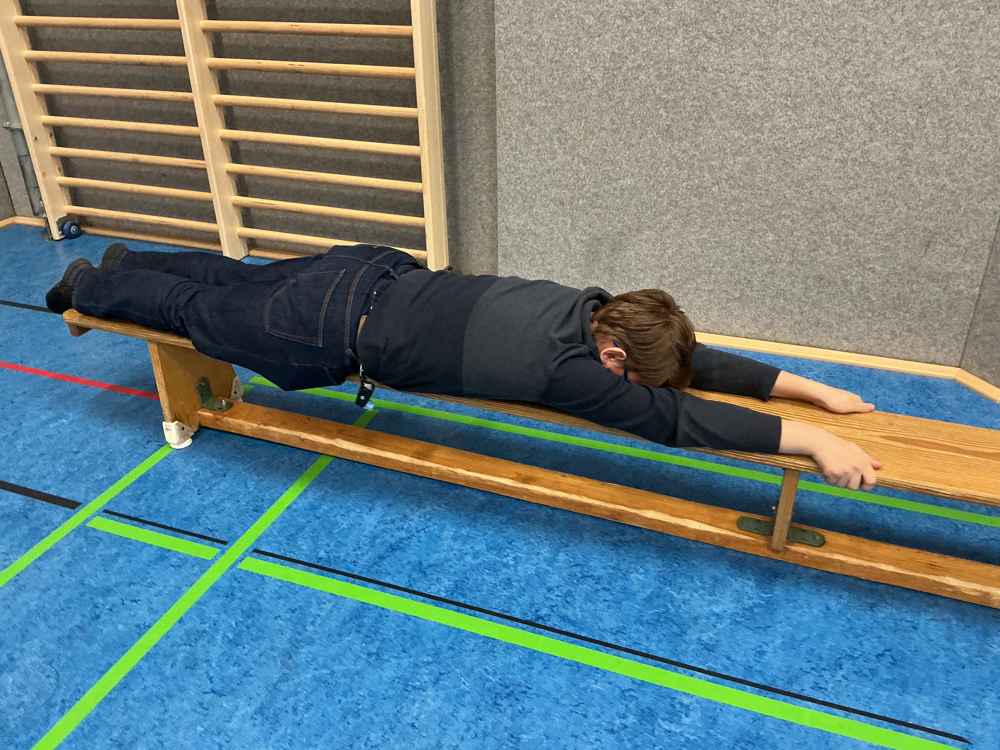

Bankdrücken und -ziehen (hin und her)
1. Bäuchlings auf Teppichfliese auf dem vorderen Ende der Bank legen.
2. Die Bank in Schulterhöhe mit den Händen umgreifen und die Arme strecken.
3. Wiederholen, bis man am hinteren Bankende anlangt, dann die Bank mit den Händen umgreifen und die Arme beugen.
BEACHTEN!: Beine und Kopf nicht anheben, nicht ins Hohlkreuz gehen.

Beispiel 1

Beispiel 1